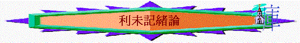

一．背景與特點
『耶和華從會幕中呼叫摩西，對他說：你曉諭以色列人說：你們中間若有人獻供物給耶 和華，要從牛群羊群中獻牲畜為供物。』利未記1:1-2
１．書名
希伯來文聖經稱『祂呼叫』(古時猶太人常以摩西五經各卷的頭幾個字為該卷的卷名)，希臘文的七十士譯本『利未記』──利未人的書，因所記的事多關於祭司利未人的事。
２．來源
『耶和華．．．．』利1:1
～是神主動從會幕中呼叫摩西寫成的。
３．作者
『呼叫摩西．．．．』利1:1
「按摩西律法滿了潔淨的日子，他們帶著孩子上耶路撒冷去，要把他獻與主。」路2:22
「滿了潔淨的日子，無論是為男孩是為女孩，他要把一歲的羊羔為燔祭，一隻雛鴿或是一隻斑鳩為贖罪祭，帶到會幕門口交給祭司。」利12:6
～新約也引用利未記的條例，而這些條例是摩西的律法，也肯定條例的內容是摩西所寫的
４．時間
『從會幕中．．．．』利1:1
『在帳幕和壇的四圍立了院帷，把院子的門簾掛上。這樣，摩西就完了工。當時，雲彩遮蓋會幕，耶和華的榮光就充滿了帳幕。摩西不能進會幕；因為雲彩停在其上，並且耶和華的榮光充滿了帳幕。每逢雲彩從帳幕收上去，以色列人就起程前往。』出
40:33-36
『這就是耶和華在西乃山為以色列人所吩咐摩西的命令。』利27:34
～出埃及記最後一章題及會幕被立起，神的榮光充滿幕，之後神就呼叫摩西寫下摩西利未記，而當時以色列人仍在曠野，未入迦南之地。
５．內容
a．很多『條例』、『例』、『命令』、『不可』、『耶和華對摩西說』、『曉諭』等字眼
b．
少記歷史事件，只有２則──亞倫兒子獻凡火（１０）及一個以色列婦人兒子 褻瀆神名（２４）的事
c．
很多『聖潔』、『聖』、『潔』、『分別』、『成聖』、『歸』、『祭司』、『供物』、『祭』、『血』、『羊』『贖罪』、『獻』、『我是耶和華』等字眼
d．
主要記載以色列人獻祭，生活中分別為聖、飲食、節期等條例。
二
．主題與真理
１．主題──與神同住的人生
『我要在那裡與以色列人相會，會幕就要因我的榮耀成為聖。我要使會幕和壇成聖，也要使亞倫和他的兒子成聖，給我供祭司的職分。我要住在以色列人中間，作他們的神。他們必知道我是耶和華他們的神，是將他們從埃及地領出來的，為要住在他們中間。我是耶和華他們的神。』出
29:43－46
『耶和華從會幕中呼叫．．．．你們中間若有人獻供物給耶和華，要．．．．』利
1:1-2
ａ．啟發問題
～在出埃及記後段，記載會幕（神與人同住的地方/表記）已完成，神的榮光充
滿，選民清楚知道神己住在他們中間，他們很自然會問：『怎與這位神相處？』『若果我想奉獻供物，是否可以自由地獻上？』「是否可用異教敬拜神的方式祭祭？」『神與人同住，人應該怎樣生活，是否可以胡亂地過活？』
ｂ．新約聯想
～約翰壹書明顯表達了真『與神相交』『住在主裏面』『與神同行』的
人生，需要做到：
i.不犯罪 （約壹１：６、２：１～
利１８、２６：２１）
ii.守主誡命
（約壹２：５
～ 利２６：３、２２：３１）
iii.自潔
（約壹３：３－６
～ 利１５：４－１３）
iv.靠主血得潔淨
（約壹１：７
～ 利１７：１１）
v.遠避偶像
（約壹５：２１
～ 利１７：７）
vi.愛看得見的弟兄
（約壹２：９－１１ ～
利１９：１８）
vii.不要愛世界
（約壹２：１５
～ 利８：３）
viii.要認罪
（約壹１：９－１０
～ 利２６：４０－４２）
同利未記所表達的內容，不謀而合
２．真理
～究竟與神同住，與神相交有甚麼秘訣？
『我是耶和華你們的神；所以你們要成為聖潔，因為我是聖潔的。你們也不可在地上的爬物污穢自己。』利
11:44
『你曉諭以色列全會眾說：你們要聖潔，因為我耶和華你們的神是聖潔的。』利
19:2
『你們要歸我為聖，因為我耶和華是聖的，並叫你們與萬民有分別，使你們作我的民。』利
20:26
『你們是耶和華你們神的兒女。不可為死人用刀劃身，也不可將額上剃光；因為你歸耶和華你神為聖潔的民，耶和華從地上的萬民中揀選你特作自己的子民。』申
14:1-2
a.一個重點：聖潔
i.聖潔的原因
（１）神的命令→人的順從
『你曉諭以色列全會眾說：你們要聖潔，因為我耶和華你們的神是聖潔的。』利19:2
「因為經上記著說：「你們要聖潔，因為我是聖潔的。」」彼前1:16
～因為這是神的命令(你們要)，所有人需服從。
（２）神的屬性→人的需要
『因為我是聖潔的。』利１９：２、彼前１：１６
『．．．．非聖潔沒有人能見主』來１２：１４
『．．．．成為聖潔，能以得救』帖後２：１３
『．．．．成為聖潔，無可責備』帖前３：１３
『人若自潔，脫離卑賤的事，就必重的器冊，成為聖潔，合乎主用．．．．』
提後２：２１
～因為神是聖潔的，若我們要與神相交，要能被神使用，要得神喜悅，人的
需要就是聖潔。
（３）神的心意→人的目標
『我是耶和華你們的神；所以你們要成為聖潔，因為我是聖潔的。你們也不可在地上的爬物污穢自已。』利11:44
『神的旨意就是要你們成為聖潔，遠避淫行；』帖前
4:3
『主知道搭救敬虔的人脫離試探，把不義的人留在刑罰之下，等候審判的日子。』彼後
2:9
『你們要追求與眾人和睦，並要追求聖潔；非聖潔沒有人能見主。』來
12:14
～而是聖潔也是神的旨意(will)，祂的心意，祂為人定下的計劃與目標，人當努力追求。
ｉｉ.聖潔的意思
（１）清潔
（２）沒玷污、沒瑕疵
（３）沒罪
（４）分別出來，同世俗、世界有分別
（５）歸神
（６）似神
『你們要歸我為聖，因為我耶和華是聖的，並叫你們與萬民有分別，使你們作我的民。』利２０：２６
『就如神從創立世界以前，在基督裡揀選了我們，使我們在他面前成為聖潔，無有瑕疵；』弗１：４
『可以獻給自己，作個榮耀的教會，毫無玷污、皺紋等類的病，乃是聖潔沒有瑕疵的。』弗５：２７
『那召你們的既是聖潔，你們在一切所行的事上也要聖潔。因為經上記著說：「你們要聖潔，因為我是聖潔的。』彼前１：１５－１６
～聖潔的希伯來文：KEDUSHAH有「分別」和「獨特」的意思，例如「聖安息日」即在七天中分一日為獨特的日子。
～而屬神的人，因神是聖潔，所以我們要從罪、世界、世俗中分別出來，歸於神，成為與世界有分別的獨特一群，可以在世見證我們是屬神，也是似神的群體。
＊聖潔的意義充滿了利未記的內容
iii.成聖的方法
（１）藉祭司獻祭
（２）藉祭牲流血
（３）自潔
（４）分別出來
（５）不效法
（６）遵守神的命令
（７）用膏油膏
（８）不玷污
（９） 歸神
ｂ．５個方向──５大段落
i.
人的奉獻（１－１０）
→要蒙神悅納
～特點：很多『供物』『獻』『蒙悅納』『蒙赦免』『馨香』『祭』等字眼
～因神是聖潔的，不是異教的神，我們若想獻供物給神，也要從異教中分別出來，依神的意思奉獻，以致可以蒙神悅納。
ii.
人的生活（１１－２０）→要分別出來
～特點：很多『不可』『不潔』『分別』字眼
～當神住在人中間後，人的飲食、人的生活也要分別出來，不可以有不潔。
iii.
人的事奉（２１－２２）→要尊神為聖
～特點：條例對象針對祭司
～神在會幕中，祭司要事奉祂，當有尊神為聖的心態與表現。
iv.
人的日子（２３－２４）→要記念真神（分別出來）
～特點：關乎很多節期，日子條例
～選民在人生喜樂、得恩的日子，不可忘記天上的神，在每年中，也要有分別出來的日子記念真神。
v.
人的產業（２５－２７）→要歸神為聖
～特點：關乎以色列民入到迦南，他們的土地，產業，僕人，承諾給神之物的處理。
～神要建立一個聖潔的國度，這囼度是有產業、有地土的，而屬神的子民也要在得產業後，要尊重神，從中也要歸神為聖的。
三．內容與大綱
|
與神同住的人生──要聖潔(分別為聖歸於神) |
||||
|
人的奉獻 |
人的生活 |
人的事奉 |
人的日子 |
人的產業 |
|
１－１０ |
１１－２０ |
２１－２２ |
２３－２４ |
２５－２７ |
|
要蒙神悅納 |
要分別出來 |
要尊神為聖 |
要記念真神 |
要歸神為聖 |
四．
律法與新約
～利未記的律法，條例與新的基督徒有甚麼關係？
『原來前約有禮拜的條例和屬世界的聖幕。』來９：１
『他們供奉的事本是天上事的形狀和影像，正如摩西將要造帳幕的時候，蒙神警戒
他，說：『你要謹慎，作各樣的物件都要照著在山上指示你的樣式。』來８：５
『律法既是將來美事的影兒，不是本物的真像，總不能藉著每年常獻一樣的祭物叫
那近前來的人得以完全。』來１０：１
1．
更引人入到新約的領域（從本質功用來看）
『所以凡有血氣的，沒有一個因行律法能在神面前稱義，因為律法本是叫人知罪。』羅
3:20
『這樣，律法是與神的應許反對嗎？斷乎不是！若曾傳一個能叫人得生的律法，義就誠然本乎律法了。但聖經把眾人都圈在罪裡，使所應許的福因信耶穌基督，歸給那信的人。但這因信得救的理還未來以先，我們被看守在律法之下，直圈到那將來的真道顯明出來。這樣，律法是我們訓蒙的師傅，引我們到基督那裡，使我們因信稱義。』加
3:21-24
～從律例中，看到人的軟弱，因為人靠自己能達到神聖潔的楆準，所以律法是叫人知罪，令人引進新約白白稱義的救恩。
２．更帶人看出新約的更美（從兩者比較來看）
a．祭牲的更美
『那頭一層帳幕作現今的一個表樣，所獻的禮物和祭物，就著良心說，都不能叫
禮拜的人得以完全。』來 9:9
『．．．．．．這祭物永不能除罪。』來
10:11
『但基督獻了一次永遠的贖罪祭，就在神的右邊坐下了。』來
10:12
～從利未記的獻祭，可以看到基督一次獻上為贖罪祭的更美，更能除去人內裏的罪。
b．血的更美
『他的血豈不更能洗淨你們的心（原文作良心），除去你們的死行，使你們事奉那永生神嗎？若山羊和公牛的血，並母牛犢的灰，灑在不潔的人身上，尚且叫人成聖，身體潔淨，何況基督藉著永遠的靈，將自己無瑕無疵獻給神，他的血豈不更能洗淨你們的心，除去你們的死行，使你們事奉那永生神麼。』來9:13-14
c．祭司的更美
『再者，耶穌為祭司，並不是不起誓立的。至於那些祭司，原不是起誓立的，只有耶穌是起誓立的；因為那立他的對他說：「主起了誓，決不後悔，你是永遠為祭司。」既是起誓立的，耶穌就作了更美之約的中保。那些成為祭司的，數目本來多，是因為有死阻隔，不能長久。這位既是永遠常存的，他祭司的職任就長久
不更換。』來 7:20-24
『這樣聖潔、無邪惡、無玷污、遠離罪人、高過諸天的大祭司，原是與我們合宜的。他不像那些大祭司，每日必須先為自己的罪，後為百姓的罪獻祭；因為他只一次將自己獻上，就把這事成全了。』來7:26-27
『但現在基督已經來到，作了將來美事的大祭司，經過那更大更全備的帳幕，不是人手所造、也不是屬乎這世界的；』來
9:11
～利未記記載了作祭的條例，他們每日須為自己及百姓的罪獻祭，佰基督卻比舊約的祭更美，因祂一次敵上，已成全了祭司每日所作的事了！
d．律法的更美
『主說：那些日子以後，我與他們所立的約乃是這樣：我要將我的律法寫在他們心上，又要放在他們的裡面。』來10:16
～舊約的條例是明文寫下的，但今日有神的靈在我們內心，教導我們如何追求聖潔。
３．更使人明白新約的真理（從互相參考來看）
ａ.聖潔的真理
『那召你們的既是聖潔，你們在一切所行的事上也要聖潔。因為經上記著說：「你們要聖潔，因為我是聖潔的。』彼前
1:15-:16
『你們既是無酵的麵，應當把舊酵除淨，好使你們成為新團；因為我們逾越節的羔羊基督已經被殺獻祭了。』林前
5:7
～從利未記聖潔的條例，使我們看到神如何看聖潔，如何看不潔，使我們更明白新約成聖的真理。
b．奉獻的真理
『所以弟兄們，我以神的慈悲勸你們，將身體獻上，當作活祭，是聖潔的，是神所喜悅的；你們如此事奉乃是理所當然的。』羅
12:1
『使我為外邦人作基督耶穌的僕役，作神福音的祭司，叫所獻上的外邦人，因著聖靈成為聖潔，可蒙悅納。』羅
15:16
～何謂「不潔」，從舊約的燔祭，祭牲要完全全燒獻上可以使我們更明白全人的奉獻。
c．事奉的真理
『惟有你們是被揀選的族類，是有君尊的祭司，是聖潔的國度，是屬神的子民，要叫你們宣揚那召你們出黑暗入奇妙光明者的美德。』彼前
2:9
『又使我們成為國民，作他父神的祭司。但願榮耀、權能歸給他，直到永永遠遠。
阿們！』啟 1:6
『使我為外邦人作基督耶穌的僕役，作神福音的祭司，叫所獻上的外邦人，因著聖靈成為聖潔，可蒙悅納。』羅
15:16
～要表達祭
d．救恩的真理
『按著律法，凡物差不多都是用血潔淨的；若不流血，罪就不得赦免了。』來
9:22
『摩西寫著說：「人若行那出於律法的義，就必因此活著。』羅
10:5
～若不流血，罪就不得赦免，舊約很多關乎贖罪的祭，也要流血，這也可以表明耶穌也需們流血贖罪的真理
e．愛心的真理
『因為全律法都包在「愛人如己」這一句話之內了。』加
5:14
～很多分別出來的條例，除了為神外，也表達了愛人，例如如何善徒僕人之條例。